🏆 图灵奖得主，要用十亿美金赌 AI 的下一个十年（上集）
Turing Award Winner Bets 1 Billion on AI's Next Decade (Part 1)
他第一次把完整的逻辑logic[ˈlɒdʒɪk] n. 逻辑讲清楚了。
👦🏻 作者: Shirley
🧑🎨 排版: NCon
当整个行业industry[ˈɪndəstri] n. 行业都在为 LLM 加码时，图灵奖得主、深度学习的奠基人之一 Yann LeCun，却拿出约 10 亿美元，赌一条相反的路：“我们正在 all-in 的大语言模型，根本通不到真正的智能。”
做客科普频道 Welch Labs，Yann LeCun 第一次把背后的完整逻辑链讲清楚：为什么生成式 AI 看似强大，却在“理解世界”这件事上撞了墙，以及他押注的替代alternative[ɔːlˈtɜːnətɪv] n. 替代方案方案，世界模型（World Model）究竟是什么。
我们整理这期视频，是因为这场争论controversy[ˈkɒntrəvɜːsi] n. 争论的结果，关系到我们正在用的每一个 AI 工具，未来会走向何方。接下来，我们会顺着 LeCun 的思路，一步步看他如何从深度学习的起点，推导derive[dɪˈraɪv] v. 推导出"LLM 是死路"这个结论。
Yann LeCun｜图灵奖得主、卷积神经网络（CNN）之父、前 Meta 首席principal[ˈprɪnsəpəl] adj. 首席的；主要的 AI 科学家，被公认为深度学习的奠基人之一。
他 1980 年代开创的卷积网络奠定establish[ɪˈstæblɪʃ] v. 奠定了今日计算机视觉的基础，2015 年提出的"蛋糕理论"则准确预言了自监督学习主导 AI 的时代。
如今他离开 Meta、融资funding[ˈfʌndɪŋ] n. 融资约 10 亿美元创办 Omni Labs，押注以 JEPA 和世界模型为核心、非生成式的全新路线，这让他成为当下质疑主流 LLM 路线中，分量最重、资历最深的声音。
故事要从 LeCun 的本行expertise[ˌekspɜːˈtiːz] n. 本行；专长讲起。
早在 1980 年代，Yann LeCun 就看见了这场革命revolution[ˌrevəˈluːʃən] n. 革命的到来。当时 AI 领域的主流还在搭建"依赖显式编程、而非从数据中学习"的专家系统，而 LeCun 已率先开创initiate[ɪˈnɪʃieɪt] v. 开创了卷积神经网络（CNN）。
25 年后，那个里程碑milestone[ˈmaɪlstəʊn] n. 里程碑式的深度学习模型 AlexNet ，竟与他 1990 年代提出的卷积网络惊人地相似。
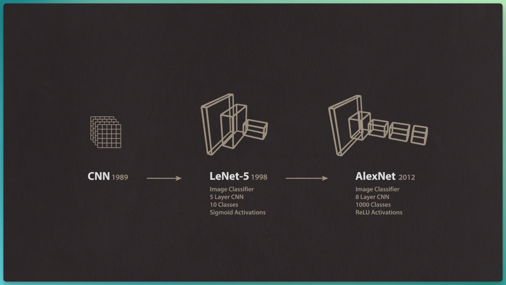
然而，随着深度学习在 2010 年代一路高歌，LeCun 和其他研究者越来越担心一件事：这套方法太依赖有标注的训练training[ˈtreɪnɪŋ] n. 训练数据了。
AlexNet 是在庞大vast[vɑːst] adj. 庞大的且精细标注的 ImageNet 数据集上、用监督学习训练出来的，它被训练来匹配人类标注员给每张图像分配的标签；相比之下，小孩子只需极少的显式标注样本，就能学会"狗"这种概念concept[ˈkɒnsept] n. 概念的通用表征。
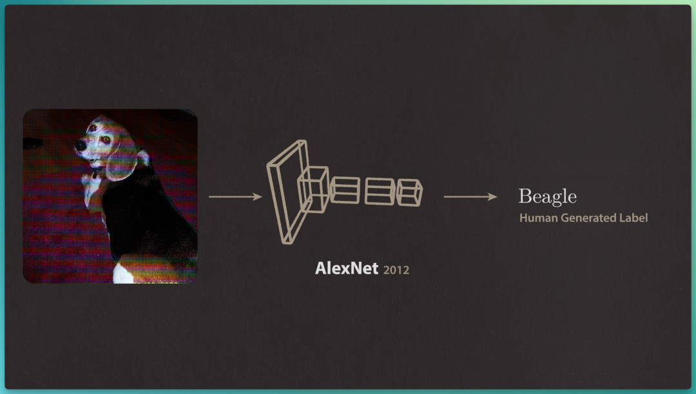
于是，随着人工标注逐渐成为监督学习（supervised learning）的瓶颈bottleneck[ˈbɒtəlnek] n. 瓶颈，研究者开始转向别的路子：
1）强化学习（reinforcement learning）：让模型从与环境environment[ɪnˈvaɪrənmənt] n. 环境的交互、而非标注数据中学习。
2）自监督学习（self-supervised learning）：标签label[ˈleɪbəl] n. 标签直接取自数据本身。
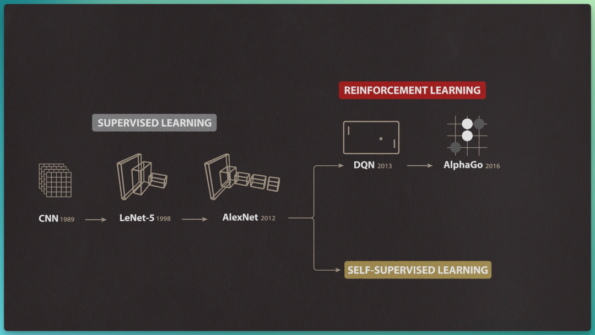
蛋糕理论：一张幻灯片预言predict[prɪˈdɪkt] v. 预言了 LLM 时代
LeCun 有一张后来成为机器学习圈“梗meme[miːm] n. 梗；迷因”的蛋糕幻灯片：
如果智能intelligence[ɪnˈtelɪdʒəns] n. 智能是一块蛋糕，那么蛋糕的主体是自监督学习，糖霜是监督学习，顶上那颗小樱桃才是强化学习。
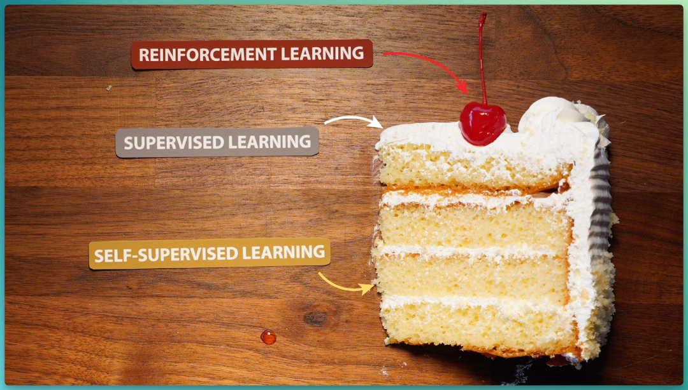
当时整个领域为强化学习痴迷fascinate[ˈfæsɪneɪt] v. 使痴迷，DeepMind 在 Atari 游戏和围棋上的突破是其高光，他却泼冷水：
这条路永远不会把我们带到接近人类或动物智能intellect[ˈɪntɪlekt] n. 智能的地方，因为它效率太低了。
后来事实证明，自监督学习的成功，在文本和语言上，来得比在视觉这类更"自然"的模态modality[məʊˈdæləti] n. 模态要快得多。
OpenAI 成立于 2015 年，最初聚焦concentrate[ˈkɒnsəntreɪt] v. 聚焦强化学习，做出了 OpenAI Gym 和 Universe，以及在复杂电子游戏上表现亮眼。
但当大部分人扑在强化学习上时，Ilya Sutskever、Alec Radford 等人却对来自 Google 的一种新神经网络架构architecture[ˈɑːkɪtektʃə] n. 架构
Transformer
产生了兴趣，它最初是为机器翻译而设计design[dɪˈzaɪn] v. 设计。
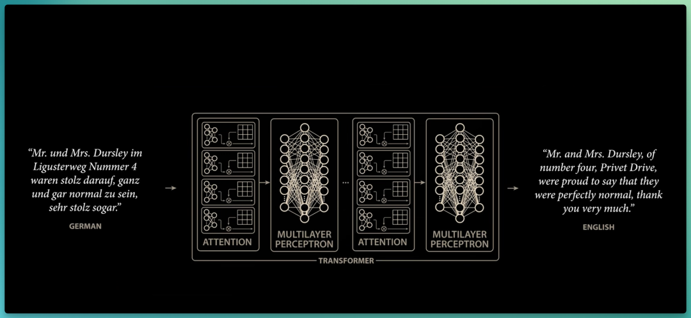
实验中，Radford 做了个有趣的改动alter[ˈɔːltə] v. 改动，不再让 Transformer 把一种语言的文本块翻译成另一种语言，而是换成更简单的自监督方式：
把训练文本切成序列sequence[ˈsiːkwəns] n. 序列，给 Transformer 模型除最后一个 token 以外的全部内容，训练它去预测这最后一个 token。
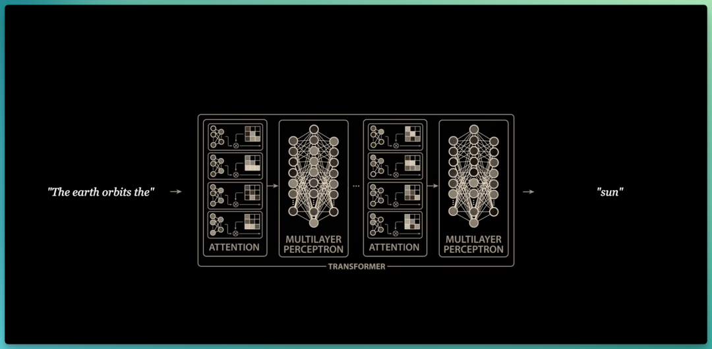
Radford 和同事们在 OpenAI 一个约 7000 本书的内部数据集上预训练，再用人工标注做标准监督学习微调finetune[ˈfaɪntjuːn] v. 微调。Radford 的这个模型，就是后来我们所熟知的 GPT-1。
GPT-1 当时没引起多少公众关注，却是一次巨大的突破breakthrough[ˈbreɪkθruː] n. 突破：它使模型摆脱了对人工标注数据的依赖，并开启了前所未有的规模化水平。
OpenAI 团队迅速意识到 Radford 研究成果的重要性，开始全力押注、激进扩张expansion[ɪkˈspænʃən] n. 扩张——2019 年 GPT-2，2020 年 GPT-3，以及 2022 年 ChatGPT。
2012 年 AlexNet 训练仅用了约一百万样本sample[ˈsɑːmpəl] n. 样本，2020 年 GPT-3 则用了数千亿样本。
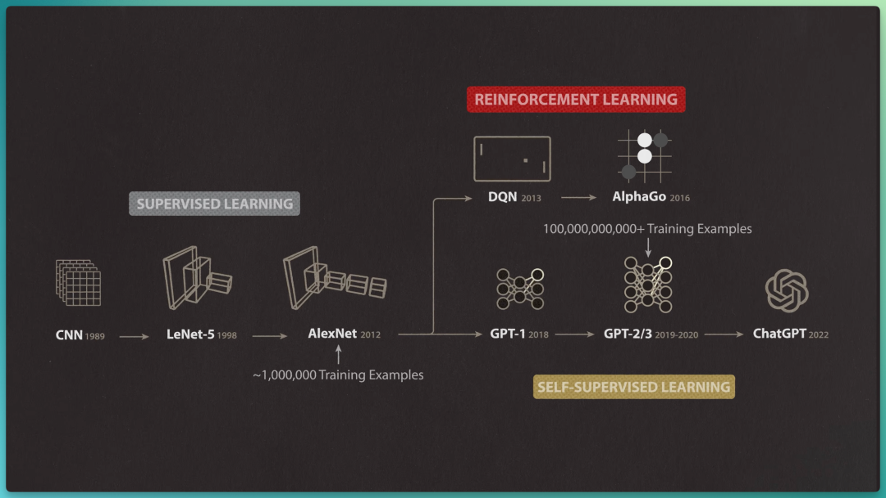
更有意思的是，最终形成的这套训练新范式paradigm[ˈpærədaɪm] n. 范式，正是 LeCun 蛋糕的精准复刻：
先是大规模自监督预训练，再是监督学习微调，最后用强化学习把原始的下一 token 预测模型塑造sculpt[skʌlpt] v. 塑造成有用的 AI 助手。
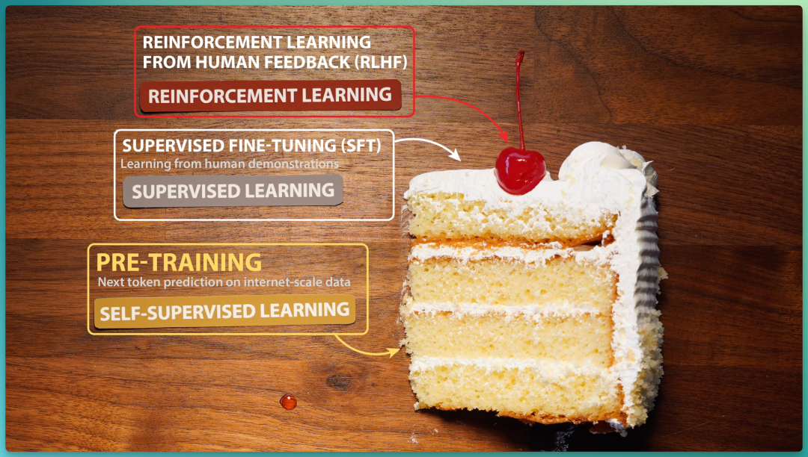
模糊诅咒curse[kɜːs] n. 诅咒：为什么生成式在视频上撞墙
这套自监督生成式方法在语言上大获成功，但在图像、视频上图景landscape[ˈlændskeɪp] n. 图景完全不同。
早在 GPT-1 成功之前，包括 LeCun 在内的研究者就尝试attempt[əˈtempt] v. 尝试将同样的自监督生成式方法用到视频上。
最直接的做法是：让神经neural[ˈnjʊərəl] adj. 神经网络接收一段视频帧序列的 RGB 像素值，然后预测下一帧的像素值，就像 GPT 预测语言里的下一个 token 一样。
可问题是，当用这种生成式架构去预测视频下一帧时，结果却是模糊blur[blɜː] v. 变模糊的。
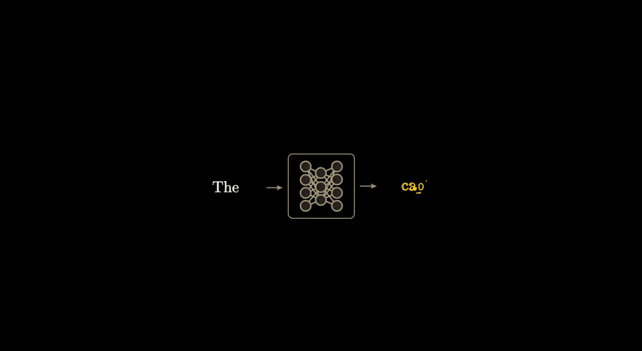
而且大语言模型是自回归的，ChatGPT 一次生成generate[ˈdʒenəreɪt] v. 生成一个 token、每一步都把刚生成的喂回输入去产生下一个。如果对"下一帧视频预测"也做自回归，这种模糊会在更长时域的预测中急剧累积accumulate[əˈkjuːmjʊleɪt] v. 累积，画面很快糊成一团虚无。
根源origin[ˈɒrɪdʒɪn] n. 根源：语言可数，视频不可数
语言虽然复杂且难以预测，但与视频相比仍相形见绌inferior[ɪnˈfɪəriə] adj. 相形见绌。
语言language[ˈlæŋɡwɪdʒ] n. 语言模型使用固定大小的词汇表，GPT-2 有 50,257 个离散输出，每个输出对应模型可能生成的下一个 token。可这种"完全枚举enumerate[ɪˈnjuːməreɪt] v. 枚举"的思路在视频领域完全行不通。
一帧全高清视频，在一般情况下，每个像素能取 256 个离散值，而我们有 1920×1080×3 个彩色像素，意味着大约有 10^15,000,000 种可能的下一视频帧，远超可观测observe[əbˈzɜːrv] v. 观测宇宙中的原子数。
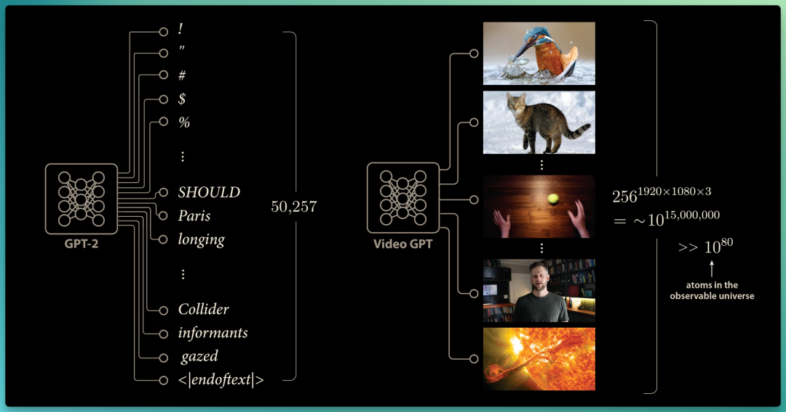
因此，视频预测模型根本不可能像语言模型那样，为每一种可能的下一视频帧设置configure[kənˈfɪɡə] v. 设置离散输出。
于是，这个时代的很多生成式视频方法，干脆让网络直接输出像素强度intensity[ɪnˈtensəti] n. 强度值。
这种做法的最大难题是模型如何学会处理不确定性certainty[ˈsɜːrtənti] n. 确定性。
我们将一个 LLM 学着补全completion[kəmˈpliːʃən] n. 补全"小球弹向了…"，和一个神经网络去预测"小球真实弹跳视频的下一帧画面“，进行对比：
LLM 那一边，由于模型在其训练集中见过小球往左、往右弹的各种例子example[ɪɡˈzæmpəl] n. 例子，而它对每个 token 都有独立的输出，所以可以各自独立地更新这些概率。
可视频模型没这么容易。如果数据集里小球沿同一条路径下落、然后弹向不同方向，由于模型被迫针对给定输入直接预测单个输出帧，面对这种歧义，它能做的最好选择就是预测这些结果consequence[ˈkɒnsɪkwəns] n. 结果的平均值。
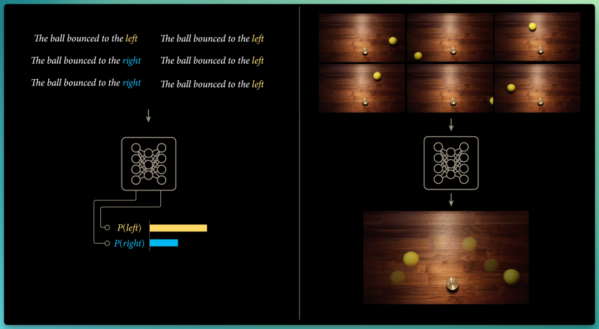
当把这些视频的像素值做平均处理后，最终得到的就是一团模糊褪色fade[feɪd] v. 褪色的烂泥。
这就是"生成式generative[ˈdʒenərətɪv] adj. 生成式"路线在理解真实世界时撞上的根本障碍：
现实的未来有无数countless[ˈkaʊntləs] adj. 无数的种可能，而它被迫只能预测出一个。
关键追问probe[prəʊb] v. 追问：模型一定要是生成式的吗？
当然，逐像素预测这只是最朴素的做法，过去二十多年里人们尝试过许多有趣的图像、视频预测策略tactic[ˈtæktɪk] n. 策略，成败各异。但这些自然冒出来的难题，促使 LeCun 和其他研究research[rɪˈsɜːrtʃ] n. 研究者提出了一个有趣的问题：
我们的模型，真的非得是生成式的吗？
回到 GPT 的例子，模型预训练完，那个“会自动补全”的能力ability[əˈbɪləti] n. 能力本身不是重点，
重点是它为了学会补全、在内部internal[ɪnˈtɜːnəl] adj. 内部的被迫学到的那套表征
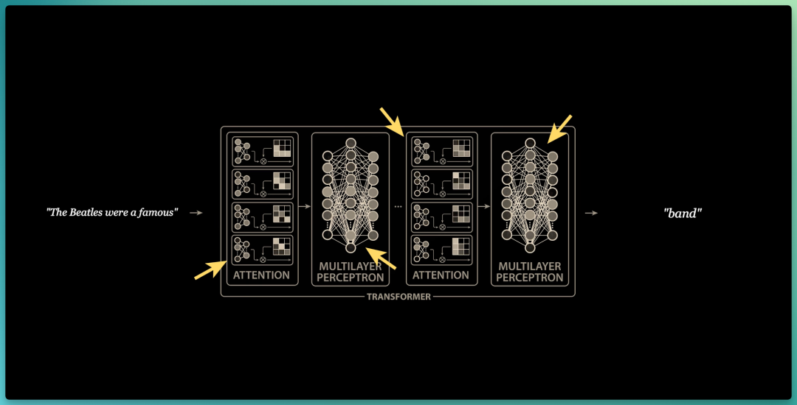
但，有没有别的信号和方法method[ˈmeθəd] n. 方法，也能学到这些强大的内部表征？
孪生twin[twɪn] n. 孪生网络：一个"不生成"的反例
LeCun 回忆recall[rɪˈkɔːl] v. 回忆，大约在 2017、2018 年，研究人员开始意识到：
学习图像表征的最佳系统，恰恰是那些不具备生成能力capability[ˌkeɪpəˈbɪlɪti] n. 能力的系统。
你拿到一张图，把它送进一个编码器encoder[ɪnˈkəʊdə] n. 编码器，然后想方设法强制这个编码器提取出尽可能多、且具备某些特定属性的信息。比如，你对同一场景scene[siːn] n. 场景拍摄两张图，或者拿一张图、把它损坏或转换一下，然后将两者都送进编码器，告诉系统：
从这两张图中提取出来的表征应当是相同的，因为它们在语义semantic[sɪˈmæntɪk] adj. 语义的上代表同一事物。
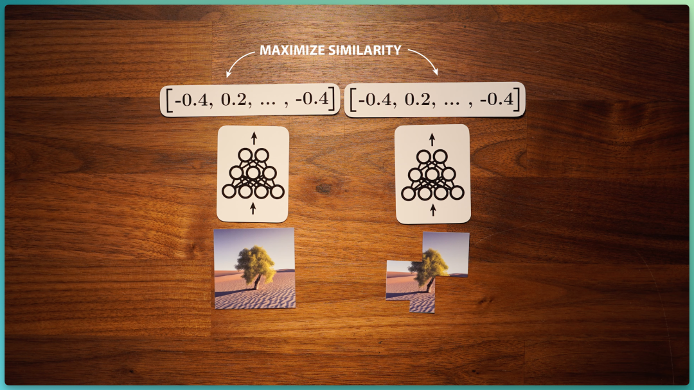
这种“联合joint[dʒɔɪnt] adj. 联合的嵌入”的思路，我们过去称之为孪生神经网络（Siamese network）。
LeCun 这里提到的孪生神经网络，是他和贝尔实验室的同事在 1990 年代初为检测伪造forge[fɔːdʒ] v. 伪造签名而发明的。
它的工作方式是把一对签名图像送进同一个神经网络的两个副本clone[kləʊn] n. 副本。这两个副本不被训练去生成任何数据，而是生成一串数字向量vector[ˈvektə] n. 向量，也就是嵌入向量（Embedding Vector）。
1.正例（Positive example）：一张参照签名 + 一张同一个人individual[ˌɪndɪˈvɪdʒuəl] adj. 个人的真签名。
2.负例negative[ˈneɡətɪv] n. 负例（Negative example）：一张参照签名 + 一张伪造签名。
训练网络副本，对正例产生最大相似度的嵌入向量，对负例产生差异最大的biggest[ˈbɪɡɪst] adj. 最大的嵌入向量。
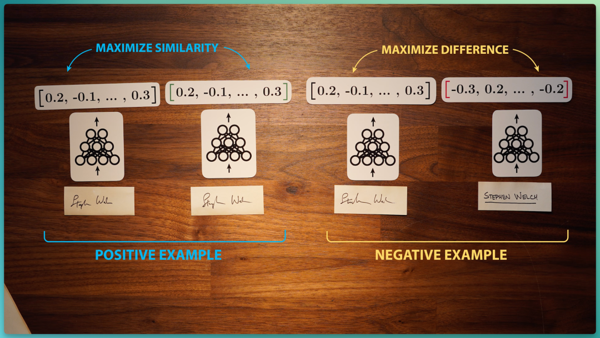
当一个新签名出现时，把新签名输入网络network[ˈnetwɜːrk] n. 网络得到它的嵌入向量，再拿它和参照签名的嵌入向量进行比较。如果：
→ 判定新签名为
（和参照签名出自同一人）；
（差异超过某阈值threshold[ˈθreʃhoʊld] n. 阈值）→ 判定为
通过这样的联合嵌入，孪生网络学到了一种非常有用的签名图像内部表征，且全程没有预测或生成generation[ˌdʒenəˈreɪʃən] n. 生成任何真实的签名图像：
联合嵌入 = 用同一个网络，把两张签名分别编码成嵌入向量，并且让这两个向量之间的"距离distance[ˈdɪstəns] n. 距离"能直接反映"是不是同一个人"——靠近就是真，远离就是伪。
而"生成图像"，恰恰是 GPT 那类生成式方法才会做的事。
表征坍缩collapse[kəˈlæps] n. 坍缩：联合嵌入多年的拦路虎
联合嵌入看起来已经完美绕开了"模糊诅咒"，但它藏着一个能让整个whole[hoʊl] adj. 整个方法失效的致命漏洞。
既然是在训练网络让"原图"和"损坏图"的嵌入尽量相似，那网络可以找到一个偷懒lazy[ˈleɪzi] adj. 偷懒的的解决方案：
不管输入什么，都返回同一个嵌入向量。
比如网络学会对任何输入都输出"全是 1"的向量，那么对同一张图的损坏版和未损坏版，它都返回全 1，相似度被最大化了，可实际上什么有用的东西它都没学到。这个问题，就叫做
表征坍缩（representation collapse）
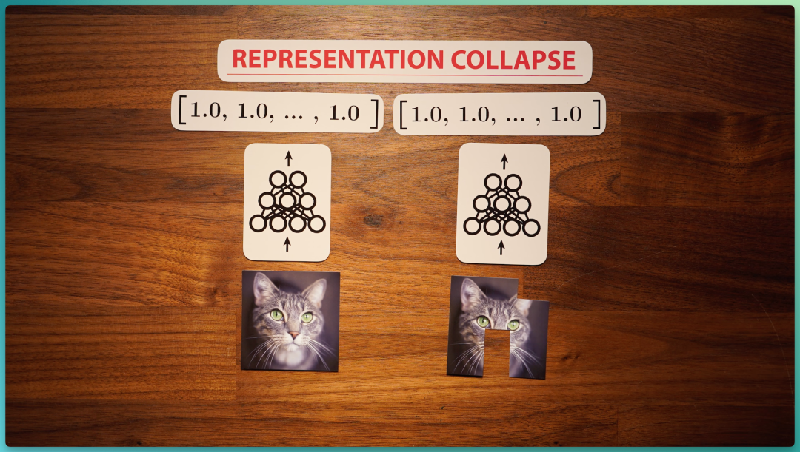
在 LeCun 最初的孪生网络方案里，团队采用了如今被称为call[kɔːl] v. 称为对比学习（contrastive learning）的方法来避免坍缩，即同时向网络提供正例和负例样本。
这套对比方法同样能用到图像和视频上，训练网络对"同一原始图像/视频的不同视图view[vjuː] n. 视图"输出相似嵌入，对"不同的图像/视频"输出相异嵌入。
这些对比方法在图像和视频上都成功实现过，但在扩展expand[ɪkˈspænd] v. 扩展规模时，需要大量计算和负例样本才能学到有意义的表征。最坏情况下，所需对比样本的数量可能随表征维度dimension[daɪˈmenʃən] n. 维度指数级增长。
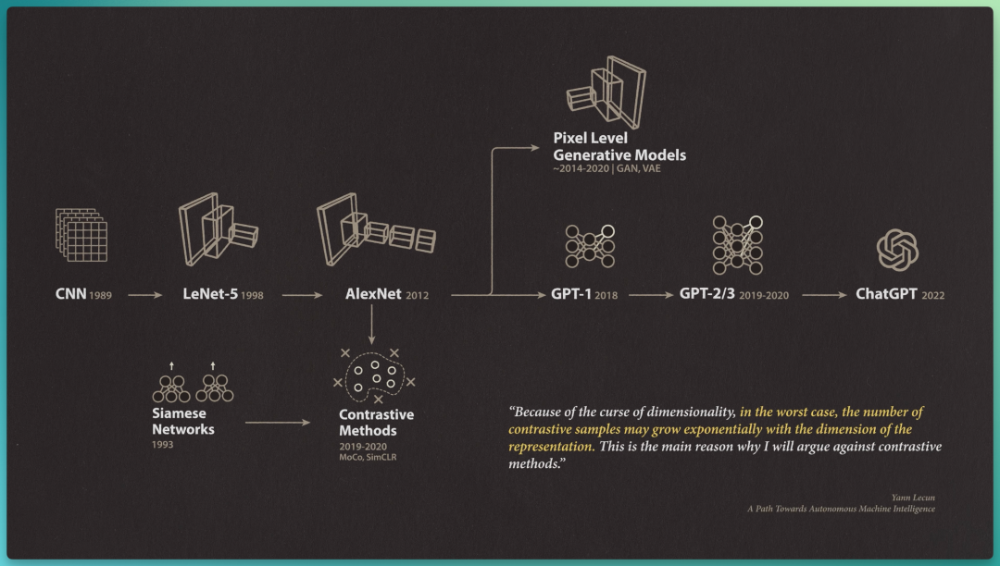
到 2010 年代末，LeCun 等人已经清楚意识到：
用生成式模型去完整重建图像和视频，并不是自监督学习的好策略。
但对于表征坍缩，当时还没有一个干净的解法solution[səˈluːʃən] n. 解法，能让联合嵌入架构学到大语言模型所享有的那种强大且通用的内部表征。
Barlow Twins：用"去冗余"破解坍缩
转机来自一次跨学科的顿悟insight[ˈɪnsaɪt] n. 顿悟。
LeCun 坦言早年训练联合嵌入的方法"有点像拼凑的小技巧"，直到遇到了 Meta 的一位博士后研究员 Stéphane Deny，他把神经科学家 Horace Barlow 1961 年的假说hypothesis[haɪˈpɒθəsɪs] n. 假说引了进来：
动物和人类视觉系统里的神经元，是通过
把这个思想thought[θɔːt] n. 思想应用于网络输出上，就得到
Barlow Twins：
用"互相关矩阵matrix[ˈmeɪtrɪks] n. 矩阵尽量逼近单位矩阵"作为损失函数：对角线（对应神经元）高相关、非对角线（不同神经元）趋零，以此既避免了坍缩，又学到了强表征。
技术拆解dissect[daɪˈsekt] v. 拆解：去冗余、互相关矩阵，与逼近单位矩阵
在我们之前一直讨论的联合嵌入架构里，嵌入向量由嵌入网络最后一层人工artificial[ˌɑːtɪˈfɪʃəl] adj. 人工的神经元产生。
如果嵌入向量长度length[leŋθ] n. 长度是 128，那么每个网络的输出层都包含 128 个神经元。
我们把一批不同distinct[dɪˈstɪŋkt] adj. 不同的的图像送进每个编码器，并随着图像的逐步输入，绘制第一个神经元的输出激活值，可以看到该神经元在第一张狗的图像上强烈激活，在猫的图像上激活较弱，以此类推；按联合嵌入的思路，第二个编码器接收的是同一批图像的损坏corrupt[kəˈrʌpt] v. 损坏版。
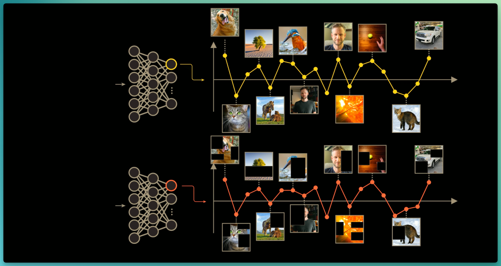
联合嵌入架构的核心core[kɔː] n. 核心要点，是让"同一原始图像/视频"生成的嵌入向量保持相似，即“第二个编码器的第一个神经元输出”，与“第一个编码器的第一个神经元输出”相似。
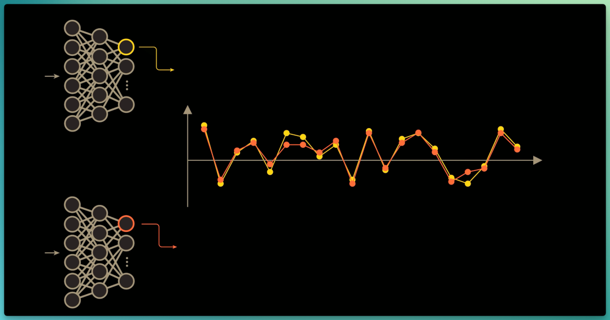
在标准联合嵌入架构中，只需度量measure[ˈmeʒə] v. 度量并最大化这两个向量之间的相似度。可正如前面所见，这种做法易陷入trap[træp] v. 陷入表征坍缩，即网络只要学会对任何输入图像都输出相同的值即可。
但现在，按 Stéphane Deny 提出的、应用 Barlow 假说的做法，我们应该减少reduce[rɪˈdjuːs] v. 减少不同神经元输出之间的冗余。
为了衡量这些冗余，研究团队计算输出向量之间的互相关correlation[ˌkɒrəˈleɪʃən] n. 互相关性（cross-correlation）：对每个向量进行缩放并计算点积，最终得到一个数值，也就是相关系数（衡量两个神经元的输出"是否总是同涨同跌"的一个数值，范围 -1 到 1，冗余越低，这个相关系数就越接近零）。
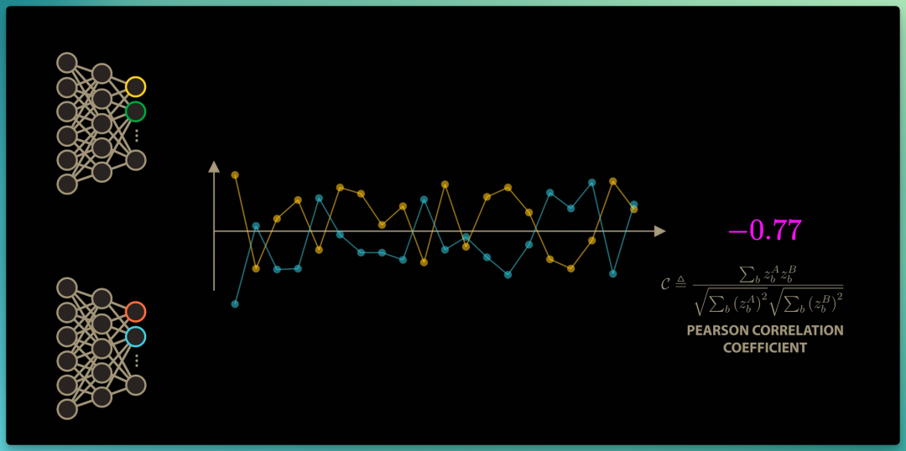
把第一个编码器的神经元输出垂直排列arrange[əˈreɪndʒ] v. 排列、把第二个编码器的神经元输出水平排列，就能算出所有神经元对之间的相关性，并将其放入一个矩阵中。这个互相关矩阵，每行对应第一个编码器的一个输出神经元，每列column[ˈkɒləm] n. 列对应第二个编码器的一个输出神经元。
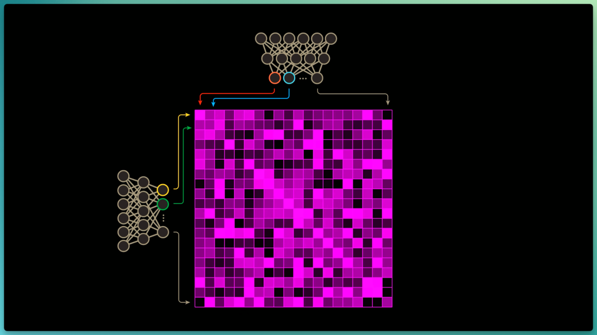
对角线diagonal[daɪˈæɡənəl] n. 对角线上的元素，是对应神经元间的相关性；而非对角线上的元素，是不同神经元间的相关性。
按照 Barlow 假说，两个编码器里"位置相同"的对应神经元，我们希望它们高度highly[ˈhaɪli] adv. 高度地相关；而"位置不同"的神经元之间，我们则希望相关性趋近approach[əˈprəʊtʃ] v. 趋近于零。所以理想情况下，这个互相关矩阵应呈现为单位矩阵的形式form[fɔːrm] n. 形式。
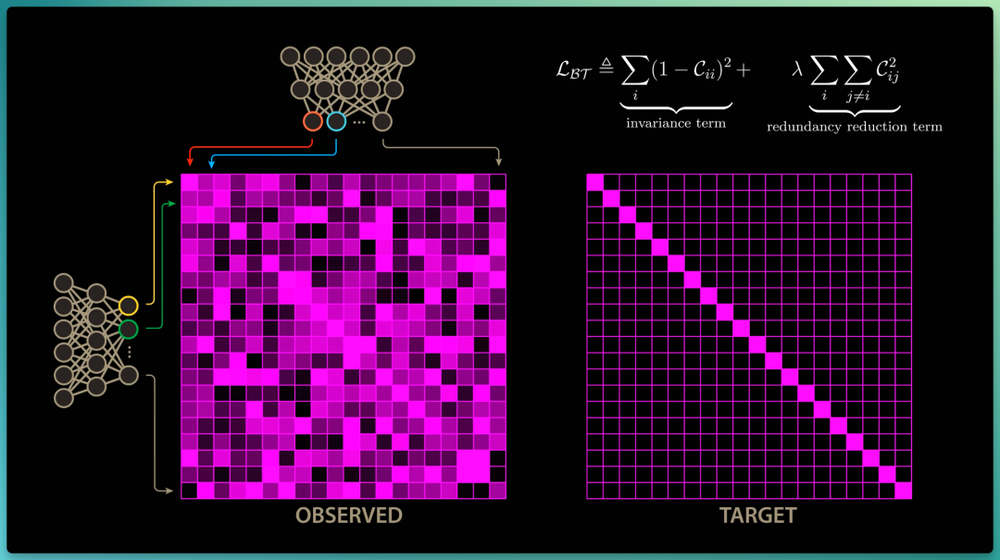
Deny、LeCun 及其他团队成员于是为联合嵌入架构设计了一种新的损失函数，去度量互相关矩阵与单位矩阵之间的偏差deviation[ˌdiːviˈeɪʃən] n. 偏差，他们把这套方法命名为 Barlow Twins。
前面我们提到，通过使用自监督预训练，GPT-1 能胜过那些针对特定语言任务进行适配adapt[əˈdæpt] v. 适配的纯监督模型。在视觉任务task[tɑːsk] n. 任务上，当时最重要的基准之一是 ImageNet 数据集上的准确率，AlexNet 在 ImageNet 验证集上达到了 59.3% 的准确率。
为了把自监督的 Barlow Twins 方法与 AlexNet 这类全监督模型对比，研究团队采用了线性探针（linear probe）这一常见做法：在训练好的 Barlow Twins 编码器输出端叠加一层神经元，并用监督学习对图像数据stat[stæt] n. 数据集进行分类训练。
主编码器模型在此训练过程中保持冻结freeze[friːz] v. 冻结状态，因此，简单的线性探针，实际上是在把 Barlow Twins 编码器学到的表征，适配到 ImageNet 分类任务上。
效果effect[ɪˈfekt] n. 效果出人意料：仅冻结编码器外加一层线性探针，就在 ImageNet 上达到了 73.2% 的准确率，比当年全监督的 AlexNet 高出 10 多个百分点。
不过，从 2012 年的 AlexNet 到 2021 年的 Barlow Twins，这 9 年间全监督方法本身itself[ɪtˈself] pron. 本身也在大幅进步。
2020 年 Google 把 Transformer 架构应用于图像分类classification[ˌklæsɪfɪˈkeɪʃən] n. 分类，把 ImageNet 准确率刷到了 88.6% 的新高。
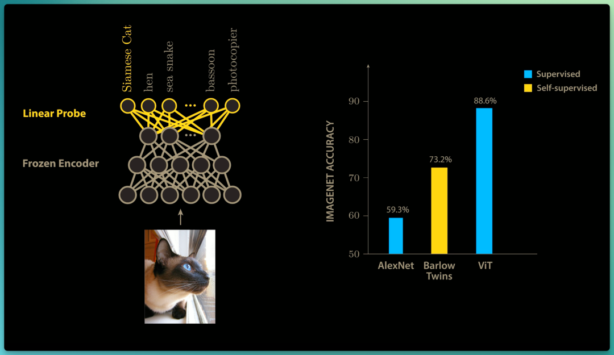
所以到 2021 年，得益于 Barlow Twins 的顿悟和其他联合嵌入方法，自监督学习在视觉任务上虽进展迅速，却仍逊于lag[læɡ] v. 落后于全监督方法。那种在语言领域推动 LLM 快速发展的自监督生成式预训练方法，对图像和视频应用application[ˌæplɪˈkeɪʃən] n. 应用来说仍遥不可及。
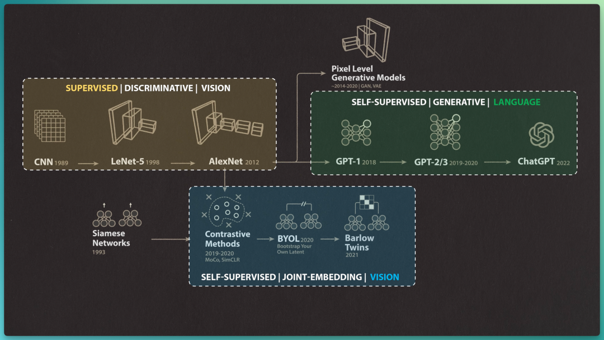
接力赛：从 VICReg 到 DINO V3，终于追平tie[taɪ] v. 追平监督学习
此后简化版的 VICReg、以及 FAIR 巴黎的 DINO 系列接力推进，直到 2025 年 8 月的
追平弱监督/监督模型（88.4%）
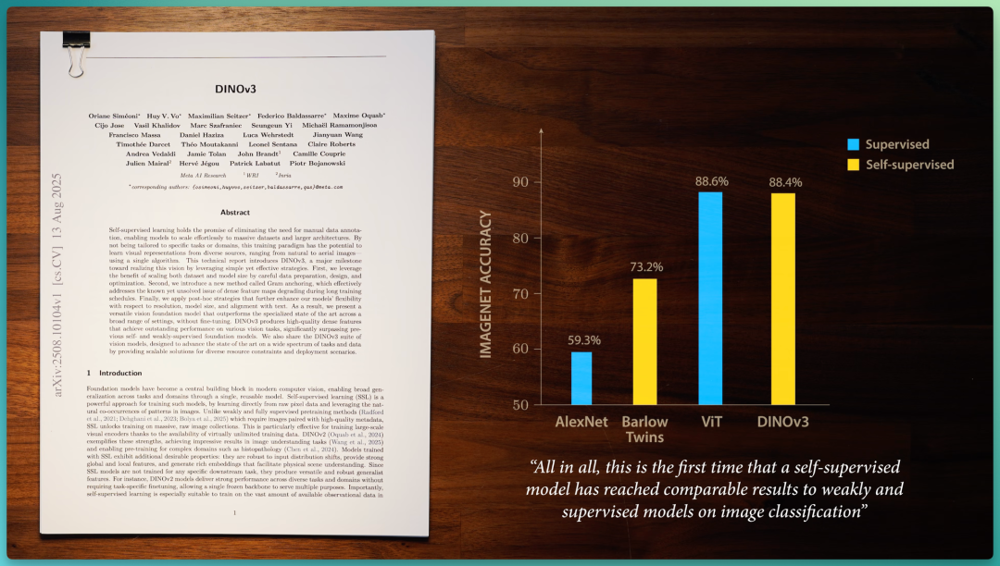
而 DINO V3 在不接触任何人工标签下学到的表征质量令人惊叹amaze[əˈmeɪz] v. 使惊叹。
以下图举例，提取 DINO 从人手上这个图像块得到的嵌入向量，再把它与图中其他图像块的嵌入向量进行比较，使用颜色映射来可视化每个图像块与手部图像块的相似度，DINO 能相当准确地把手从背景中分割segment[ˈseɡmənt] v. 分割出来。
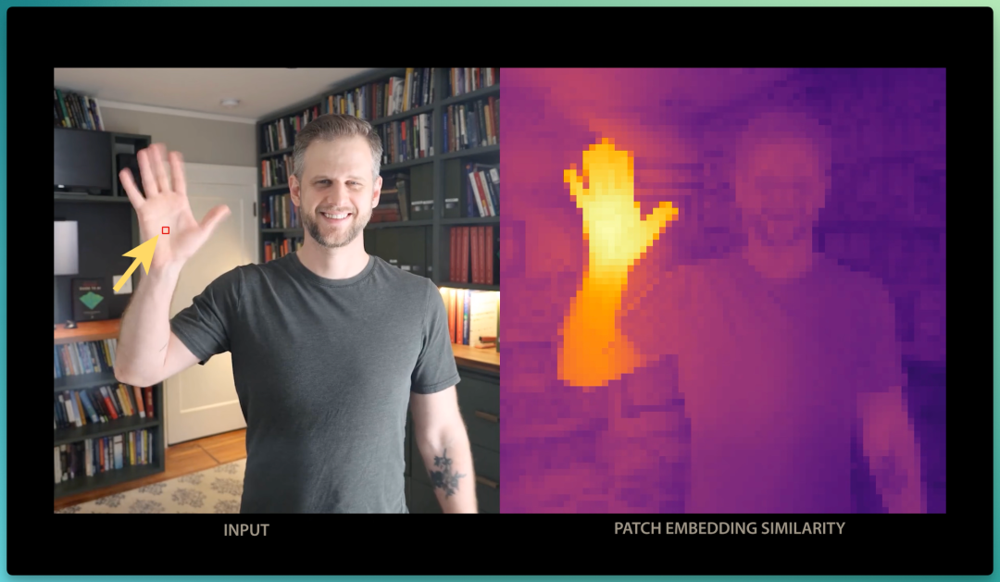
对小球、猫、书等，同样的方法也奏效succeed[səkˈsiːd] v. 奏效。
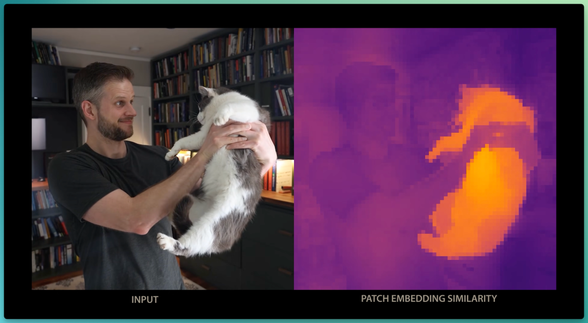
世界模型：17 岁少年与 10 亿美元的赌注wager[ˈweɪdʒə] n. 赌注
在 Barlow Twins、VICReg 和 DINO v1 成功之后，2022 年，LeCun 把这些思路和线索整合integrate[ˈɪntɪɡreɪt] v. 整合成一篇 60 页的论文——《A Path Towards Autonomous Machine Intelligence（通往自主机器智能之路）》。
他的开篇之问极具穿透力：“我们用几百万小时的训练数据，却只能训练出 L2 级的自动驾驶，而一个 17 岁少年几小时练习就能学会开车，这其中的奥秘mystery[ˈmɪstəri] n. 奥秘是什么？”
——一套能对物理physics[ˈfɪzɪks] n. 物理世界做出预测的模型。
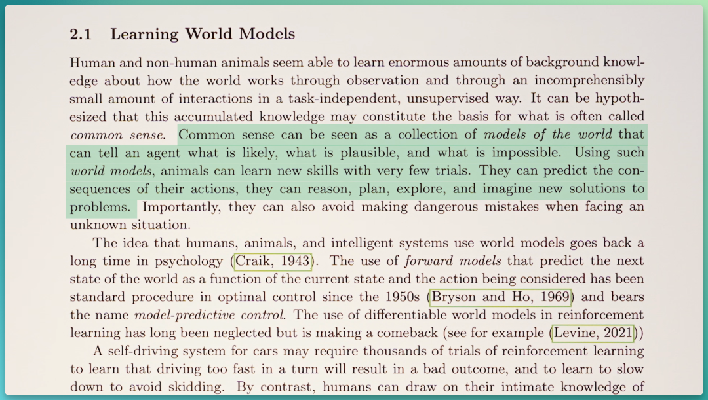
JEPA，在嵌入空间space[speɪs] n. 空间里预测
铺垫了这么久，LeCun 真正想讲的，其实是一个层次hierarchy[ˈhaɪərɑːki] n. 层次关系：
联合嵌入架构，是构建世界模型的正确地基foundation[faʊnˈdeɪʃən] n. 地基；而真正把它变成世界模型的那一步，叫 JEPA。
他给出了 JEPA 的定义：
JEPA，即联合嵌入预测predictive[prɪˈdɪktɪv] adj. 预测的架构（Joint Embedding Predictive Architecture）。你拿世界的一个观察observation[ˌɒbzəˈveɪʃən] n. 观察、再拿下一个观察，把它们各自送进编码器，这就是一个联合嵌入式的架构；接着再接上一个
，让它用「t 时刻的状态」去预测「t+1 时刻的状态」，你还可以让这个预测以某个
为条件。这样一来，你就有了一个
联合嵌入架构 = 地基，在它之上接一个预测器predictor[prɪˈdɪktə] n. 预测器（再叠加动作条件），就得到了 JEPA（一个能预测未来的世界模型）。
举个具体例子：与其用生成式架构去预测下一帧视频的像素值，我们可以把"视频"和"下一帧"映射mapping[ˈmæpɪŋ] n. 映射成嵌入向量，再训练一个预测器，
根据“视频的嵌入向量”去预测“下一帧的嵌入向量”
在此实现下，JEPA 架构让模型从"预测每个像素"的不可能任务中解放liberate[ˈlɪbəreɪt] v. 解放出来，
只需专注于预测那些能穿过编码器的、场景中真正显著salient[ˈseɪliənt] adj. 显著的的特征。
LeCun 在这里举了个很形象的例子：
如果你训练一个模型去预测行车记录仪视频里接下来会发生什么，生成式做法会把大部分算力compute[kəmˈpjuːt] n. 算力，耗在预测路边树叶的随机晃动上，这些东西像素多、动个不停，却本质上无法预测。而 JEPA 可以把它们直接丢掉discard[dɪˈskɑːd] v. 丢弃。
在 V-JEPA 2 的论文里（我们会在下集深入），研究团队将 JEPA 模型的条件设定为发给机械臂manipulator[məˈnɪpjʊleɪtə] n. 机械臂的动作信号：模型会观察包含机械臂及其周围环境的图像序列，并经过训练去预测下一帧视频画面的嵌入向量，但同时接收发送至机械臂的控制信号。
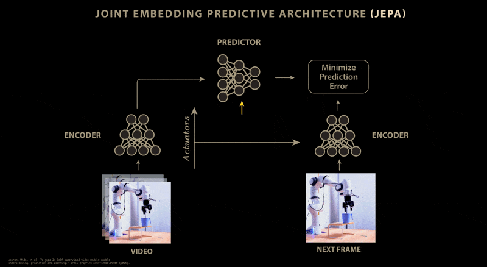
这让预测器得以学会预测各种控制信号将如何改变机械臂在嵌入图像中的位置position[pəˈzɪʃən] n. 位置。
这个学到的世界模型，随后用于机器人robot[ˈrəʊbɒt] n. 机器人的规划与控制：
1）给定某个目标target[ˈtɑːɡɪt] n. 目标状态的图像（比如把杯子从平台上移开），把它送进下一帧编码器中，得到机器人目标状态的嵌入向量（goal embedding）；
2）然后用控制算法，来探索explore[ɪkˈsplɔː] v. 探索世界模型在给定各种假设动作下的预测（predicted embedding）；
3）最终找到一组能让"模型预测的未来状态"匹配match[mætʃ] v. 匹配"目标状态"的动作（predicted embedding = goal embedding）。
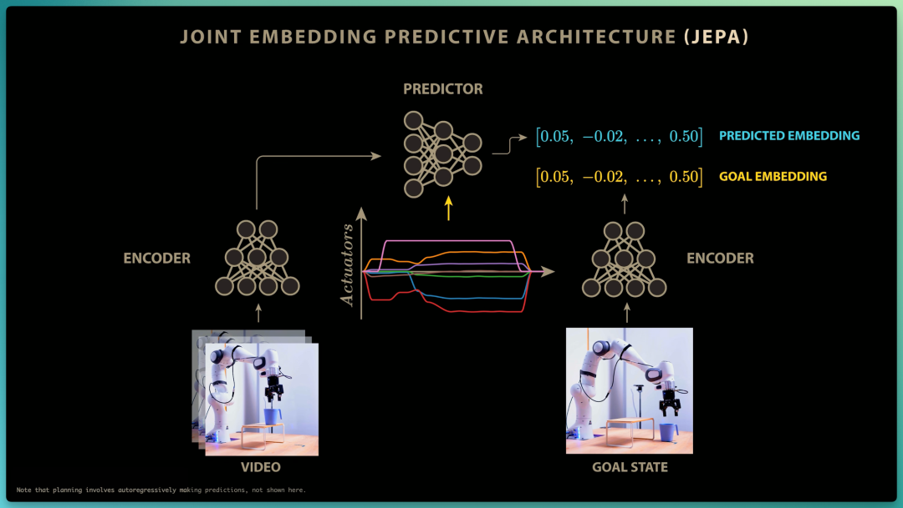
而上面这套"预测一连串动作、再优化optimize[ˈɒptɪmaɪz] v. 优化出最优序列"的做法，LeCun 说，本质上是"经典最优控制的新转折"：
你构建construct[kənˈstrʌkt] v. 构建一个模型，它根据"t 时刻世界的状态"加上"你设想要采取的动作（或干预、控制）"，得到"t+1 时刻世界的状态"。有了它，你就能预测一连串动作的结果，并通过优化，找出能到达某一特定specific[spəˈsɪfɪk] adj. 特定的结果的最优动作序列。
这其实是老到上世纪 50 年代末苏联、60 年代初西方的控制论cybernetics[ˌsaɪbəˈnetɪks] n. 控制论。
真正新的地方只有两点：一是这个模型不再靠人手写manual[ˈmænjʊəl] adj. 手动的定，而是用机器学习学出来；二是它学的不再是原始输入，而是输入的抽象abstract[ˈæbstrækt] adj. 抽象的状态表征，也就是说，预测发生在嵌入空间里。
说到底，LeCun 在赌什么
上集最后，LeCun 抛出了一句"会得罪offend[əˈfend] v. 得罪硅谷"的话：
我无法理解grasp[ɡræsp] v. 理解，你怎么能在一个不能预测自身行为后果的系统之上，去构建一个智能体。
真正可靠的智能体，必须能预判一连串动作的结果，再去规划路径、守住安全边界boundary[ˈbaʊndri] n. 边界。
推理reasoning[ˈriːzənɪŋ] n. 推理就不再是单纯的"自回归预测"，而变成一种"搜索"。
他反对的从来不是"AI 会变强"，而是"靠语言模型这条路能通向真正的true[truː] adj. 真正的智能"这个判断。
机器真正缺的，是一个能预判anticipate[ænˈtɪsɪpeɪt] v. 预判后果、会提前规划的世界模型。
这，才是他押上 10 亿美元的东西。
但唱衰bash[bæʃ] v. 唱衰一条路不难，证明另一条路走得通才难。
世界模型听起来很有说服力convincing[kənˈvɪnsɪŋ] adj. 有说服力的，可它真能比今天的大模型做得更好吗？能不能控制一台真实的机器人？
这些问题problem[ˈprɒbləm] n. 问题，LeCun 在同一场对谈的后半段给出了答案。
下集，我们会看看他的世界模型第一次拿到现实中，成色quality[ˈkwɒləti] n. 质量究竟如何。
十字路口正在寻找独立撰稿人，撰写 AI 产品和模型评测review[rɪˈvjuː] n. 评测。如果你写过类似文章：《实测 PixVerse C1》、《实测 LibTV》，请联系 zeo0811@gmail.com ，邮件内容content[ˈkɒntent] n. 内容请包括：① 个人介绍、② 你写过的 AI 评测文章。我们会提供有竞争力的稿酬remuneration[rɪˌmjuːnəˈreɪʃən] n. 稿酬。期待与你一起观察与记录document[ˈdɒkjʊmənt] v. 记录 AI 时代 🎪